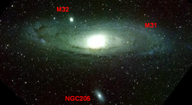
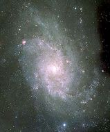

Two massive bright spirals, the Milky Way and the Andromeda Galaxy (M31, NGC 224), dominate a gravitationally-bound group of around 40 galaxies known as the Local Group which spans a volume approximately 10 million light years in diameter. Also prominent is the Triangulum galaxy (M33, NGC 598), a smaller spiral which (under very dark, clear conditions) is the most distant naked-eye object visible.
The rest of the Group is made up of smaller, fainter dwarf galaxies, many of which are satellites of the Milky Way or M31. However, the group is very dynamic and membership of the Group is probably changing over time as galaxies interact with, and move between, other nearby groups such as the Maffei 1 Group, the Sculptor Group, and the M81 and M83 Groups. Although the position and radial velocity of local galaxies can be measured accurately, their distances can be difficult to determine, and the total membership of the Local Group remains uncertain.
The Large and Small Magellanic Clouds (LMC and SMC) are small well-known Milky Way companions, but nearer to our Galaxy are the more recently discovered Canis Major Dwarf and Sag DEG (Sagittarius Dwarf Elliptical Galaxy). Sag DEG is apparently being disrupted by tidal gravitational forces in its close encounter with the Milky Way. Local Group galaxies and subgroups are interacting gravitationally with each other (and with neighbouring groups) and mergers and collisions are thought to have happened in the past and speculated for the future. For example, Andromeda and the Milky Way are approaching each other at around 120 km/s and astronomers suggest that in several billion years they may merge to form a giant elliptical galaxy.
Some members of the Local Group:
| Galaxy name | Approx distance (ly) | Approx diameter (ly) |
| from centre of MW | ||
| Milky Way (MW) | 100,000 | |
| Canis Major Dwarf | 42,000 | 5,000 |
| Sag DEG | 50,000 | 10,000 |
| LMC | 179,000 | 30,000 |
| SMC | 210,000 | 16,000 |
| Andromeda (M31) | 2,650,000 | 140,000 |
| M32 M32 (NGC 221) | 2,600,000 | 8,000 |
| M110 (NGC 205) | 2,650,000 | 15,000 |
| Triangulum Galaxy (M33) | 2,850,000 | 55,000 |
Images of several Local Group galaxies are shown below. Note that they are not to scale.

|

Andromeda (M31) and satellites M32 and M110
Credit: NOAO/AURA/NSF |

Triangulum galaxy (M33)
Credit: © Malin/IAC/RGO |
Our Local Group belongs to an even larger structure, a supercluster with the rich Virgo cluster of galaxies at its centre, about 70 million light years (about 21 Mpc) away.